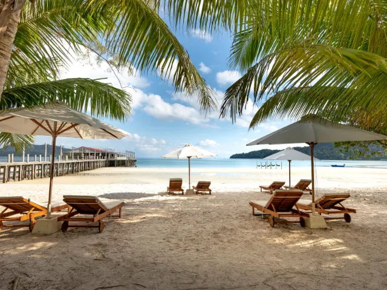
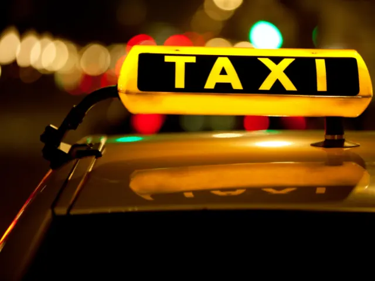
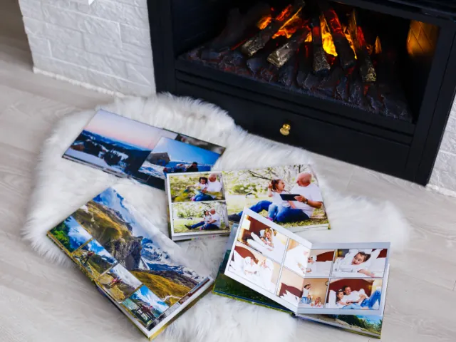

Partnerbijdrage
Ontspannen op vakantie, zo doe je dat
Gepubliceerd op 18 oktober 2022, bijgewerkt op 20 februari 2024

Vakantie is ontspannen, iets om naar uit te kijken, en helemaal als je op reis gaat om nieuwe gebieden, landen, culturen, plaatsen of gebruiken te ontdekken. Even weg uit je dagelijkse routines. Volop actief op pad of juist even echt helemaal niks in een all-inclusive resort. Het doel is ontspanning, en dat is voor iedereen weer iets anders. Maar wat voor iedereen wél geldt: je wilt voorpret en geen ‘voorstress’ als je op vakantie gaat! En dat komt helemaal goed als je de reis alles wat er – vooraf en achteraf – bij hoort goed regelt.
Waar ga je heen op vakantie?
Ontspannen op vakantie is ook ontspannen boeken. Op internet kun je volop inspiratie opdoen voor een gave vakantie, de sky is the limit! Maar misschien is dat voor jou juist net een beetje te veel van het goede. De sky is wel een heel verre limit; je ziet door de bomen het bos niet meer. Het is verstandig om dan eens binnen te lopen bij een reisbureau of een online reisadviseur in de arm te nemen.
Reisagent, wel zo ontspannen op vakantie
Een reisagent kan op basis van wat vragen aan jou en jouw persoontje heel goed meedenken in wat voor jou werkt als het om vakantie en alles wat daarbij hoort gaat. Denk aan de bestemming, welke manier van reizen, wat voor soort verblijf et cetera. Of je gaat met wat basisideetjes naar een reisadviseur en laat je voorlichten over de voors en tegens van je keuzes; misschien zijn er dingen waar je zelf helemaal niet aan gedacht hebt. Als je reis in kannen en kruiken is, kun je deze boeken; de reisagent neemt je alle rompslomp uit handen, regelt tickets en transfers … ideaal toch?
Yes, je hebt geboekt, nu kun je de dagen gaan aftellen! De voorpret kan beginnen. Je kunt alvast virtueel rondkijken op je bestemming, kijken wat de hotspots zijn op Tripadvisor of er wat (reis)boeken over lezen.

Doen: maak checklists!
Het duurt nu niet lang meer, tijd om jezelf in de voorbereidende modus te zetten. Het is handig om checklists te maken; ook deze kun je overal op internet vinden. Een lijst met letterlijk alles waaraan je moet denken voor je vertrek, maar ook bijvoorbeeld kleinschaliger: een checklist voor de inhoud van je koffer of een shoppinglist voor de laatste boodschapjes. Vul bestaande checklists eventueel aan met eigen input. En ja, ook de voor de hand liggende dingen horen op een checklist thuis: paspoort, tickets, bikini, zonnebril, wandelschoenen, die vergeet je toch niet? Zet ze toch maar op de lijst om af te vinken!
Fotocamera mee op reis
Iets waar je misschien minder snel aan denkt is je camera checken. Je wilt je vakantie natuurlijk graag letterlijk onvergetelijk maken en met je mobiel zal het absoluut lukken je reis op beeld vast te leggen. Maar ga je fotograferen met je (spiegelreflex)camera, zorg dan dat deze in tip-top conditie is. Laat hem nog even nakijken voor vertrek. Bij Chipclean kalibreren en reinigen ze je camera professioneel en ben jij ervan verzekerd dat jouw vakantieherinneringen de beste kwaliteit hebben. Fotocamera wel even op de lijst zetten hè, CHECK.
Gemak: pak een taxi naar het vliegveld
Zo dan, je koffers staan gepakt en wel klaar; op je checklist staan alleen nog maar groene vinkjes. Het enige wat je nog hoeft te doen is de deur achter je dichttrekken. En naar de luchthaven natuurlijk. Goed voorbereid als je bent, heb je vorige week al de taxi besproken die je naar het vliegveld brengt. Je wordt thuis opgehaald en bij de vertrekhal afgezet … Het is nu vakantie, dus geen stress door vertragingen of niet rijden van treinen. Reis je vanaf Nijmegen dan zijn vliegvelden Eindhoven Airport en Weeze Airport dichterbij dan Schiphol, wellicht heb je daar bij je boeking rekening mee gehouden (tenminste als de vlucht naar jouw bestemming vanaf deze luchthavens vertrekken). Beide luchthavens liggen onder een uur rijden van Nijmegen.

bekijk hier het overzicht van alle tAXIBEDRIJVEN IN NIJMEGENNagenieten van je vakantie
Het is jammer dat de vakantie erop zit, maar je bent weer helemaal opgeladen. Je verheugt je erop om je avonturen te delen met je omgeving en je souvenirs uit te stallen en uit te delen. Als je slim bent geweest heb je nog een paar daagjes vrij: niet direct weer in de modus van alledag als je terug bent. Nadat je thuis weer een beetje geland bent, bekijk je de foto’s nog eens. Je maakt een mooie selectie om te verwerken in een fotoboek. Een superleuke manier om je vakantie van voor naar achter nog een keertje te beleven. En met een fotoboek heb je toch meer een verhaal dan een map met losse foto’s …
